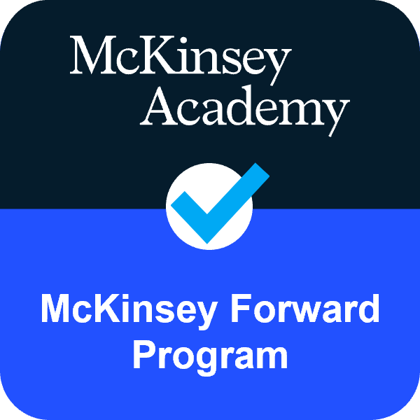
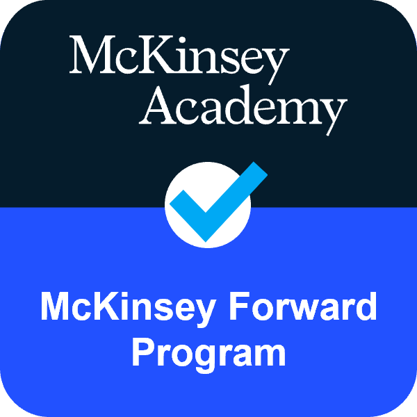

Hi there
It’s Nancy. IT Business Analyst based in Berlin. Helping various industries translate their business needs into codable action!
It’s Nancy. IT Business Analyst based in Berlin. Helping various industries translate their business needs into codable action!
Top Skills: Business Analysis • Agile Project Management • Business Process Improvement • Intercultural Communication
Top Certifications: Certified Salesforce Administrator (SCA) & Business Analyst II Certified in Cybersecurity (CC) II Microsoft Certified: Azure AI-900 II Scrum Fundamental Certified (SFC)
About me:
I am an experienced professional with a diverse background in operations and project management.
Transitioning into IT and business analysis, I leverage my skills to optimize processes and bridge
the gap between business needs and technological solutions.
For my full resume, please visit myLinkedInprofile.

 



Han Han
Technical Product Manager, Wefox Insurance